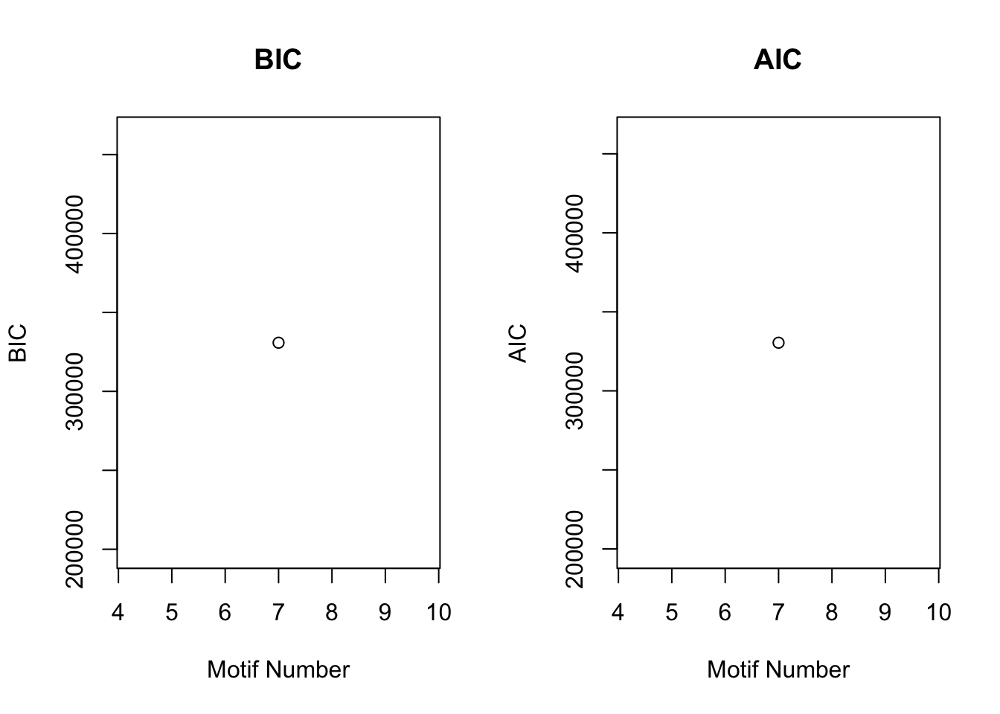
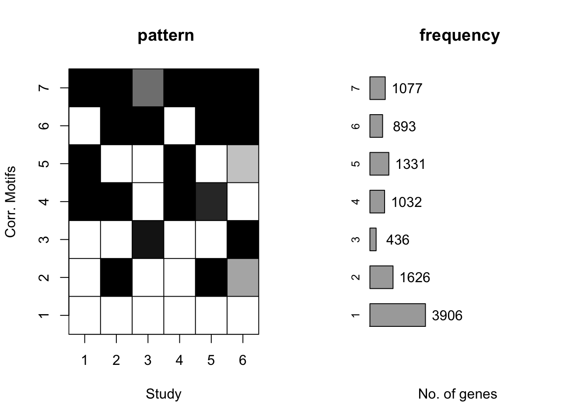
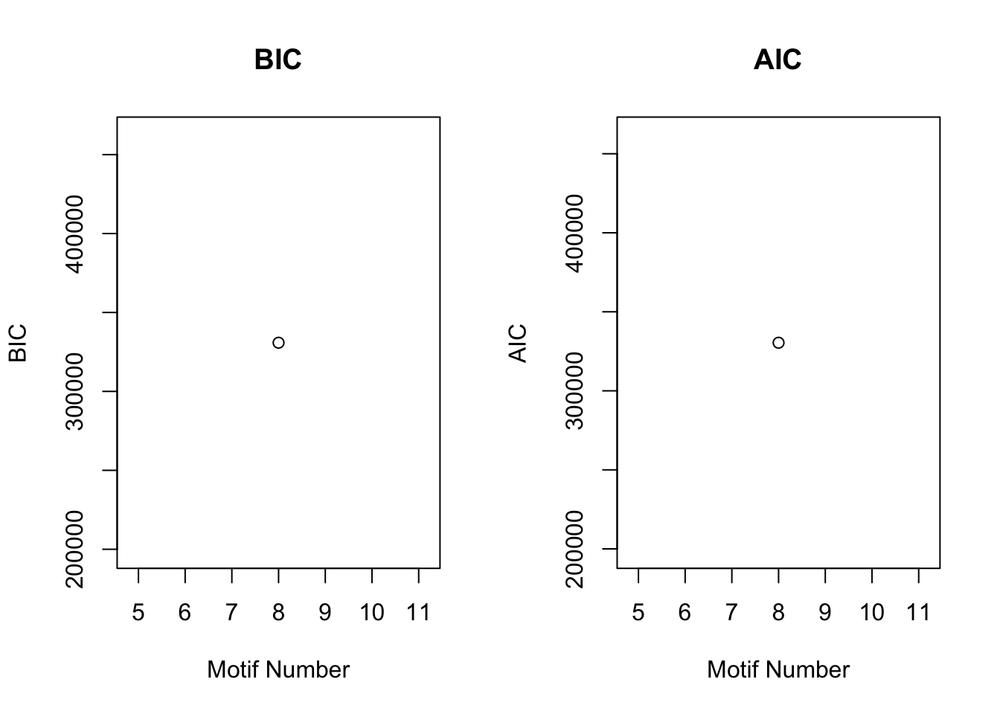
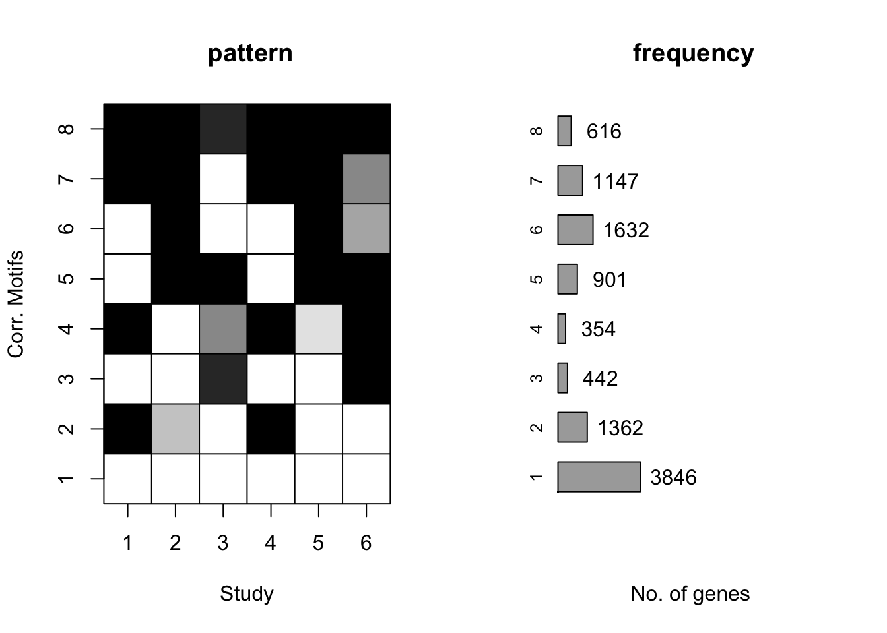
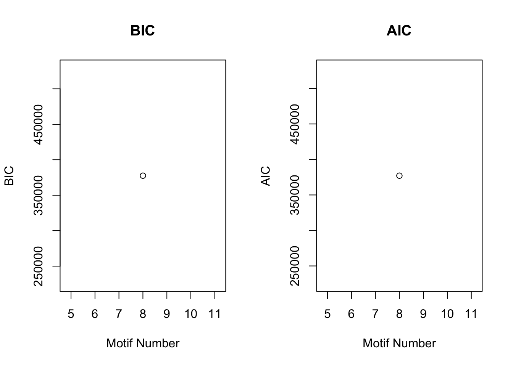
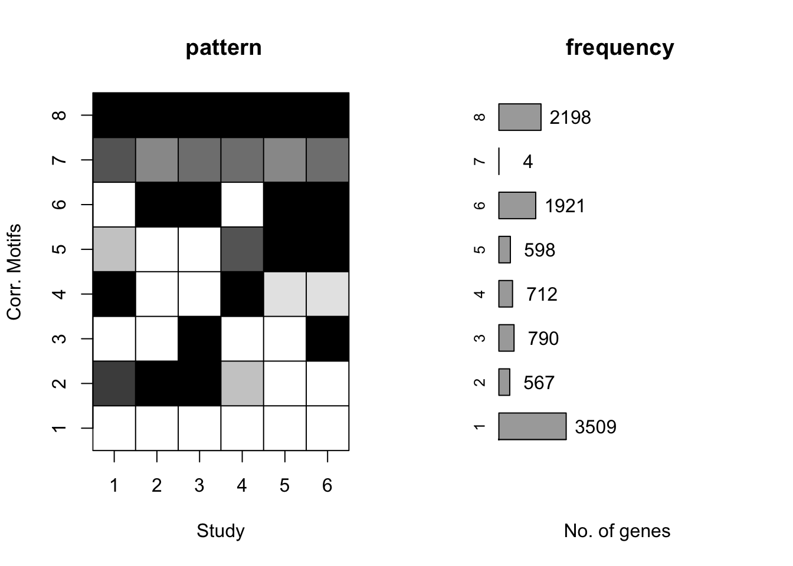
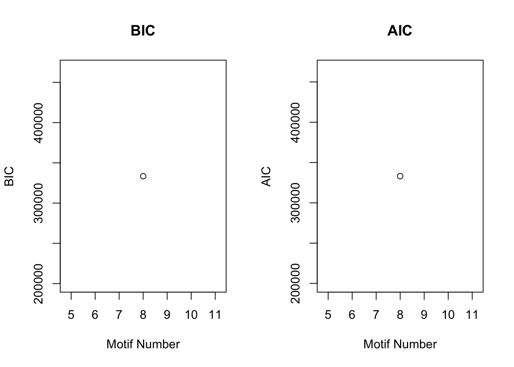
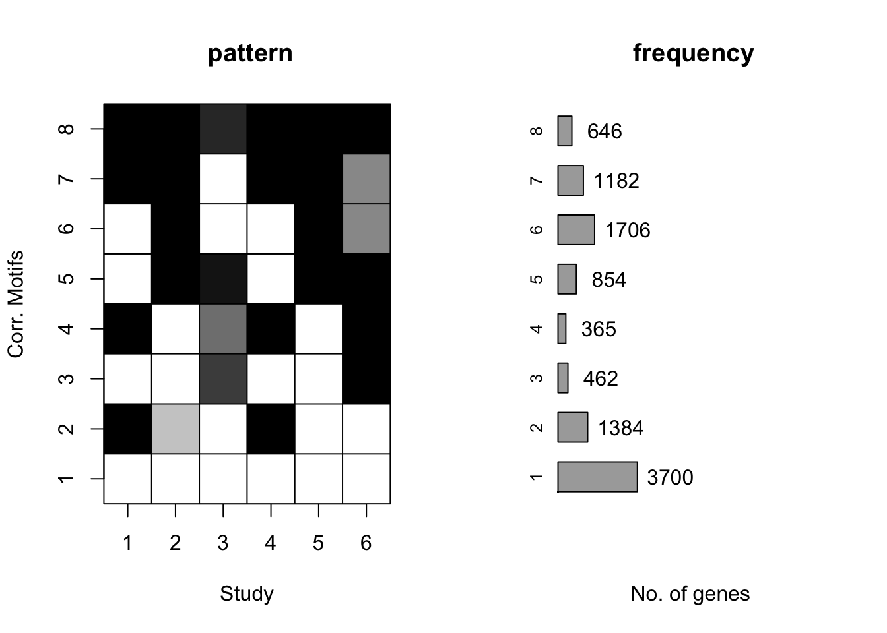

Cormotif_avg_log2(CPM)
Lauren Blake
January 8, 2017
The goal of this script is to perform the main analyses and the supplemental analyses using Cormotif.
library("edgeR")## Warning: package 'edgeR' was built under R version 3.2.4## Loading required package: limma## Warning: package 'limma' was built under R version 3.2.4library("R.utils")## Warning: package 'R.utils' was built under R version 3.2.5## Loading required package: R.oo## Warning: package 'R.oo' was built under R version 3.2.5## Loading required package: R.methodsS3## Warning: package 'R.methodsS3' was built under R version 3.2.3## R.methodsS3 v1.7.1 (2016-02-15) successfully loaded. See ?R.methodsS3 for help.## R.oo v1.21.0 (2016-10-30) successfully loaded. See ?R.oo for help.##
## Attaching package: 'R.oo'## The following objects are masked from 'package:methods':
##
## getClasses, getMethods## The following objects are masked from 'package:base':
##
## attach, detach, gc, load, save## R.utils v2.4.0 (2016-09-13) successfully loaded. See ?R.utils for help.##
## Attaching package: 'R.utils'## The following object is masked from 'package:utils':
##
## timestamp## The following objects are masked from 'package:base':
##
## cat, commandArgs, getOption, inherits, isOpen, parse, warningslibrary("plyr")## Warning: package 'plyr' was built under R version 3.2.5library("limma")
library("Biobase")## Loading required package: BiocGenerics## Loading required package: parallel##
## Attaching package: 'BiocGenerics'## The following objects are masked from 'package:parallel':
##
## clusterApply, clusterApplyLB, clusterCall, clusterEvalQ,
## clusterExport, clusterMap, parApply, parCapply, parLapply,
## parLapplyLB, parRapply, parSapply, parSapplyLB## The following object is masked from 'package:limma':
##
## plotMA## The following objects are masked from 'package:stats':
##
## IQR, mad, xtabs## The following objects are masked from 'package:base':
##
## anyDuplicated, append, as.data.frame, as.vector, cbind,
## colnames, do.call, duplicated, eval, evalq, Filter, Find, get,
## grep, grepl, intersect, is.unsorted, lapply, lengths, Map,
## mapply, match, mget, order, paste, pmax, pmax.int, pmin,
## pmin.int, Position, rank, rbind, Reduce, rownames, sapply,
## setdiff, sort, table, tapply, union, unique, unlist, unsplit## Welcome to Bioconductor
##
## Vignettes contain introductory material; view with
## 'browseVignettes()'. To cite Bioconductor, see
## 'citation("Biobase")', and for packages 'citation("pkgname")'.library("GEOquery")## Setting options('download.file.method.GEOquery'='auto')## Setting options('GEOquery.inmemory.gpl'=FALSE)##
## Attaching package: 'GEOquery'## The following object is masked from 'package:R.utils':
##
## gunziplibrary("plyr")
#theme_set(theme_bw(base_size = 16))
library("biomaRt")
library("colorfulVennPlot")## Loading required package: gridlibrary("VennDiagram")## Warning: package 'VennDiagram' was built under R version 3.2.5## Loading required package: futile.logger## Warning: package 'futile.logger' was built under R version 3.2.5library("gridExtra")## Warning: package 'gridExtra' was built under R version 3.2.4##
## Attaching package: 'gridExtra'## The following object is masked from 'package:Biobase':
##
## combine## The following object is masked from 'package:BiocGenerics':
##
## combinelibrary("car")## Warning: package 'car' was built under R version 3.2.5##
## Attaching package: 'car'## The following object is masked from 'package:VennDiagram':
##
## ellipselibrary("topGO")## Loading required package: graph##
## Attaching package: 'graph'## The following object is masked from 'package:plyr':
##
## join## Loading required package: GO.db## Loading required package: AnnotationDbi## Warning: package 'AnnotationDbi' was built under R version 3.2.3## Loading required package: stats4## Loading required package: IRanges## Warning: package 'IRanges' was built under R version 3.2.3## Loading required package: S4Vectors## Warning: package 'S4Vectors' was built under R version 3.2.3##
## Attaching package: 'S4Vectors'## The following object is masked from 'package:plyr':
##
## rename##
## Attaching package: 'IRanges'## The following object is masked from 'package:plyr':
##
## desc## The following object is masked from 'package:R.oo':
##
## trim## Loading required package: DBI## Warning: package 'DBI' was built under R version 3.2.5## ## Loading required package: SparseM## Warning: package 'SparseM' was built under R version 3.2.5##
## Attaching package: 'SparseM'## The following object is masked from 'package:base':
##
## backsolve## Warning: replacing previous import by 'graph::.__C__dist' when loading
## 'topGO'##
## groupGOTerms: GOBPTerm, GOMFTerm, GOCCTerm environments built.##
## Attaching package: 'topGO'## The following object is masked from 'package:IRanges':
##
## members## The following object is masked from 'package:grid':
##
## depthlibrary("rowr")##
## Attaching package: 'rowr'## The following object is masked from 'package:plyr':
##
## countlibrary("Cormotif")## Loading required package: affylibrary("ggfortify")## Warning: package 'ggfortify' was built under R version 3.2.5## Loading required package: ggplot2## Warning: package 'ggplot2' was built under R version 3.2.4library("dplyr")## Warning: package 'dplyr' was built under R version 3.2.5##
## Attaching package: 'dplyr'## The following objects are masked from 'package:rowr':
##
## coalesce, count## The following object is masked from 'package:AnnotationDbi':
##
## select## The following objects are masked from 'package:IRanges':
##
## collapse, desc, intersect, setdiff, slice, union## The following objects are masked from 'package:S4Vectors':
##
## intersect, rename, setdiff, union## The following object is masked from 'package:graph':
##
## union## The following object is masked from 'package:car':
##
## recode## The following object is masked from 'package:gridExtra':
##
## combine## The following object is masked from 'package:biomaRt':
##
## select## The following object is masked from 'package:Biobase':
##
## combine## The following objects are masked from 'package:BiocGenerics':
##
## combine, intersect, setdiff, union## The following objects are masked from 'package:plyr':
##
## arrange, count, desc, failwith, id, mutate, rename, summarise,
## summarize## The following objects are masked from 'package:stats':
##
## filter, lag## The following objects are masked from 'package:base':
##
## intersect, setdiff, setequal, unionlibrary("tidyr")## Warning: package 'tidyr' was built under R version 3.2.5##
## Attaching package: 'tidyr'## The following object is masked from 'package:IRanges':
##
## expand## The following object is masked from 'package:R.utils':
##
## extractlibrary("statmod")## Warning: package 'statmod' was built under R version 3.2.5library("qtlcharts")## Warning: package 'qtlcharts' was built under R version 3.2.5library("mygene")## Loading required package: GenomicFeatures## Warning: package 'GenomicFeatures' was built under R version 3.2.3## Loading required package: GenomeInfoDb## Warning: package 'GenomeInfoDb' was built under R version 3.2.3## Loading required package: GenomicRanges## Warning: package 'GenomicRanges' was built under R version 3.2.3##
## Attaching package: 'GenomicFeatures'## The following object is masked from 'package:topGO':
##
## genes##
## Attaching package: 'mygene'## The following object is masked from 'package:dplyr':
##
## query## The following object is masked from 'package:biomaRt':
##
## getGenesource("~/Desktop/Endoderm_TC/ashlar-trial/analysis/chunk-options.R")## Warning: package 'knitr' was built under R version 3.2.5# Load the data
cpm_cyclicloess_40 <- read.table("~/Desktop/Endoderm_TC/ashlar-trial/data/cpm_cyclicloess_40.txt")
# Setup matrix
mean_tech_reps_matrix <- as.matrix(cpm_cyclicloess_40, nrow=10304, ncol = 40)
mean_tech_reps_matrix[1:10304,1:40] = as.numeric(as.character(mean_tech_reps_matrix[1:10304,1:40]))
colnames(mean_tech_reps_matrix) <- colnames(cpm_cyclicloess_40)
rownames(mean_tech_reps_matrix) <- rownames(cpm_cyclicloess_40)Cormotif analysis (Main paper)
Identifying genes with interspecies differences by day
# Create a factor for the experiments, with the levels ordered such that as.numeric converts them to numbers in a defined manner
# Note: there are 6 human biological replicates and 4 chimp biological replicates
species <- c("H", "H","H","H","H","H", "C", "C","C","C",
"H","H","H","H","H","H", "C", "C","C","C",
"H","H","H","H","H","H", "C", "C","C","C",
"H","H","H","H","H","H", "C", "C","C","C")
day <- c("0", "0","0","0","0","0","0", "0", "0", "0", "1","1","1","1","1","1","1","1", "1","1",
"2", "2","2","2","2","2","2","2","2", "2",
"3", "3","3","3","3","3","3","3", "3", "3")
group_fac <- factor(paste(species, day, sep = "."),
levels = c(
"H.0", "H.1", "H.2", "H.3", "C.0", "C.1", "C.2", "C.3"))
groupid <- as.numeric(group_fac)
# Conditions to compare:
# day0, day1, day2, day3,
compid_day <- data.frame(c1 = c(1, 2, 3, 4),
c2 = c(5, 6, 7, 8))
#interspecies differences at each day
set.seed(12345)
cormotif_day <- cormotiffit(exprs = mean_tech_reps_matrix, groupid = groupid, compid = compid_day, K = 3:5)[1] "We have run the first 50 iterations for K=3"
[1] "We have run the first 100 iterations for K=3"
[1] "We have run the first 50 iterations for K=4"
[1] "We have run the first 100 iterations for K=4"
[1] "We have run the first 50 iterations for K=5"
[1] "We have run the first 100 iterations for K=5"plotIC(cormotif_day)
plotMotif(cormotif_day)
gene_prob_day <- cormotif_day$bestmotif$p.post
rownames(gene_prob_day) <- rownames(cpm_cyclicloess_40)
prob_sp_1 <- rownames(gene_prob_day[(gene_prob_day[,1] < 0.5 & gene_prob_day[,2] <0.5 & gene_prob_day[,3] <0.5 & gene_prob_day[,4] <0.5),])
length(prob_sp_1)[1] 4447#4495
prob_sp_2 <- rownames(gene_prob_day[(gene_prob_day[,1] >0.7 & gene_prob_day[,2] >0.9 & gene_prob_day[,3] <0.5 & gene_prob_day[,4] <0.5),])
length(prob_sp_2)[1] 305#352
prob_sp_3 <- rownames(gene_prob_day[(gene_prob_day[,1] <0.5 & gene_prob_day[,2] <0.5 & gene_prob_day[,3] > 0.9 & gene_prob_day[,4] > 0.9),])
length(prob_sp_3)[1] 214#221
prob_sp_4 <- rownames(gene_prob_day[(gene_prob_day[,1] >0.9& gene_prob_day[,2] >0.9 & gene_prob_day[,3]>0.9 & gene_prob_day[,4] >0.9),])
length(prob_sp_4)[1] 2565#2509Cormotif analysis (DE probabilities for consecutive days)
Testing out different Ks
# Create a factor for the experiments, with the levels ordered such that as.numeric converts them to numbers in a defined manner
# Note: there are 6 human biological replicates and 4 chimp biological replicates
species <- c("H", "H","H","H","H","H", "C", "C","C","C",
"H","H","H","H","H","H", "C", "C","C","C",
"H","H","H","H","H","H", "C", "C","C","C",
"H","H","H","H","H","H", "C", "C","C","C")
day <- c("0", "0","0","0","0","0","0", "0", "0", "0", "1","1","1","1","1","1","1","1", "1","1",
"2", "2","2","2","2","2","2","2","2", "2",
"3", "3","3","3","3","3","3","3", "3", "3")
group_fac <- factor(paste(species, day, sep = "."),
levels = c("H.0", "H.1", "H.2", "H.3",
"C.0", "C.1", "C.2", "C.3"))
groupid <- as.numeric(group_fac)
# Conditions to compare:
# day0, day1, day2, day3,
compid_tran <- data.frame(c1 = c(1, 2, 3, 5, 6, 7),
c2 = c(2, 3, 4, 6, 7, 8))
# Differences during diffentiation
set.seed(1)
cormotif_tran <- cormotiffit(exprs = mean_tech_reps_matrix, groupid = groupid,
compid = compid_tran, K = 5:10, max.iter=500)[1] "We have run the first 50 iterations for K=5"
[1] "We have run the first 100 iterations for K=5"
[1] "We have run the first 150 iterations for K=5"
[1] "We have run the first 200 iterations for K=5"
[1] "We have run the first 50 iterations for K=6"
[1] "We have run the first 100 iterations for K=6"
[1] "We have run the first 150 iterations for K=6"
[1] "We have run the first 50 iterations for K=7"
[1] "We have run the first 100 iterations for K=7"
[1] "We have run the first 150 iterations for K=7"
[1] "We have run the first 200 iterations for K=7"
[1] "We have run the first 50 iterations for K=8"
[1] "We have run the first 100 iterations for K=8"
[1] "We have run the first 150 iterations for K=8"
[1] "We have run the first 200 iterations for K=8"
[1] "We have run the first 250 iterations for K=8"
[1] "We have run the first 300 iterations for K=8"
[1] "We have run the first 350 iterations for K=8"
[1] "We have run the first 400 iterations for K=8"
[1] "We have run the first 450 iterations for K=8"
[1] "We have run the first 500 iterations for K=8"
[1] "We have run the first 50 iterations for K=9"
[1] "We have run the first 100 iterations for K=9"
[1] "We have run the first 150 iterations for K=9"
[1] "We have run the first 200 iterations for K=9"
[1] "We have run the first 250 iterations for K=9"
[1] "We have run the first 300 iterations for K=9"
[1] "We have run the first 350 iterations for K=9"
[1] "We have run the first 400 iterations for K=9"
[1] "We have run the first 450 iterations for K=9"
[1] "We have run the first 500 iterations for K=9"
[1] "We have run the first 50 iterations for K=10"
[1] "We have run the first 100 iterations for K=10"
[1] "We have run the first 150 iterations for K=10"
[1] "We have run the first 200 iterations for K=10"
[1] "We have run the first 250 iterations for K=10"
[1] "We have run the first 300 iterations for K=10"
[1] "We have run the first 350 iterations for K=10"
[1] "We have run the first 400 iterations for K=10"
[1] "We have run the first 450 iterations for K=10"cormotif_tran$bestmotif$loglike[1] -165215.3set.seed(12345)
cormotif_tran <- cormotiffit(exprs = mean_tech_reps_matrix, groupid = groupid,
compid = compid_tran, K = 5:10, max.iter=500)[1] "We have run the first 50 iterations for K=5"
[1] "We have run the first 100 iterations for K=5"
[1] "We have run the first 150 iterations for K=5"
[1] "We have run the first 200 iterations for K=5"
[1] "We have run the first 50 iterations for K=6"
[1] "We have run the first 100 iterations for K=6"
[1] "We have run the first 150 iterations for K=6"
[1] "We have run the first 200 iterations for K=6"
[1] "We have run the first 250 iterations for K=6"
[1] "We have run the first 300 iterations for K=6"
[1] "We have run the first 50 iterations for K=7"
[1] "We have run the first 100 iterations for K=7"
[1] "We have run the first 150 iterations for K=7"
[1] "We have run the first 200 iterations for K=7"
[1] "We have run the first 50 iterations for K=8"
[1] "We have run the first 100 iterations for K=8"
[1] "We have run the first 150 iterations for K=8"
[1] "We have run the first 200 iterations for K=8"
[1] "We have run the first 250 iterations for K=8"
[1] "We have run the first 300 iterations for K=8"
[1] "We have run the first 350 iterations for K=8"
[1] "We have run the first 400 iterations for K=8"
[1] "We have run the first 450 iterations for K=8"
[1] "We have run the first 500 iterations for K=8"
[1] "We have run the first 50 iterations for K=9"
[1] "We have run the first 100 iterations for K=9"
[1] "We have run the first 150 iterations for K=9"
[1] "We have run the first 200 iterations for K=9"
[1] "We have run the first 250 iterations for K=9"
[1] "We have run the first 300 iterations for K=9"
[1] "We have run the first 350 iterations for K=9"
[1] "We have run the first 400 iterations for K=9"
[1] "We have run the first 450 iterations for K=9"
[1] "We have run the first 500 iterations for K=9"
[1] "We have run the first 50 iterations for K=10"
[1] "We have run the first 100 iterations for K=10"
[1] "We have run the first 150 iterations for K=10"
[1] "We have run the first 200 iterations for K=10"
[1] "We have run the first 250 iterations for K=10"
[1] "We have run the first 300 iterations for K=10"
[1] "We have run the first 350 iterations for K=10"
[1] "We have run the first 400 iterations for K=10"
[1] "We have run the first 450 iterations for K=10"
[1] "We have run the first 500 iterations for K=10"plotIC(cormotif_tran)
plotMotif(cormotif_tran)
cormotif_tran$bestmotif$loglike[1] -165189set.seed(12345)
cormotif_tran <- cormotiffit(exprs = mean_tech_reps_matrix, groupid = groupid,
compid = compid_tran, K = 7, max.iter=500)[1] "We have run the first 50 iterations for K=7"
[1] "We have run the first 100 iterations for K=7"
[1] "We have run the first 150 iterations for K=7"
[1] "We have run the first 200 iterations for K=7"
[1] "We have run the first 250 iterations for K=7"
[1] "We have run the first 300 iterations for K=7"
[1] "We have run the first 350 iterations for K=7"
[1] "We have run the first 400 iterations for K=7"
[1] "We have run the first 450 iterations for K=7"
[1] "We have run the first 500 iterations for K=7"plotIC(cormotif_tran)
plotMotif(cormotif_tran)
cormotif_tran$bestmotif$loglike[1] -165217.8set.seed(12345)
cormotif_tran <- cormotiffit(exprs = mean_tech_reps_matrix, groupid = groupid,
compid = compid_tran, K = 8, max.iter=500)[1] "We have run the first 50 iterations for K=8"
[1] "We have run the first 100 iterations for K=8"
[1] "We have run the first 150 iterations for K=8"
[1] "We have run the first 200 iterations for K=8"
[1] "We have run the first 250 iterations for K=8"
[1] "We have run the first 300 iterations for K=8"
[1] "We have run the first 350 iterations for K=8"
[1] "We have run the first 400 iterations for K=8"
[1] "We have run the first 450 iterations for K=8"
[1] "We have run the first 500 iterations for K=8"plotIC(cormotif_tran)
plotMotif(cormotif_tran)
cormotif_tran$bestmotif$loglike[1] -165217.5gene_prob_tran <- cormotif_tran$bestmotif$p.post
rownames(gene_prob_tran) <- rownames( cpm_cyclicloess_40)
# Seed 12345
prob_day_1 <- rownames(gene_prob_tran[(gene_prob_tran[,1] <0.5 & gene_prob_tran[,2] <0.5 & gene_prob_tran[,3] <0.5 & gene_prob_tran[,4] <0.5 & gene_prob_tran[,5] < 0.5 & gene_prob_tran[,6]<0.5),])
length(prob_day_1)[1] 3786#3789
prob_day_2 <- rownames(gene_prob_tran[(gene_prob_tran[,1] >0.5 & gene_prob_tran[,2] >0.5 & gene_prob_tran[,3] < 0.5 & gene_prob_tran[,4] >0.5 & gene_prob_tran[,5] > 0.5 & gene_prob_tran[,6 ]>0.5),])
length(prob_day_2)[1] 616#616
prob_day_3 <- rownames(gene_prob_tran[(gene_prob_tran[,1] >0.5 & gene_prob_tran[,2] <0.5 & gene_prob_tran[,3] <0.5 & gene_prob_tran[,4] >0.5 & gene_prob_tran[,5] < 0.5 & gene_prob_tran[,6]<0.5),])
length(prob_day_3)[1] 1024#1024
prob_day_4 <- rownames(gene_prob_tran[(gene_prob_tran[,1] >0.5 & gene_prob_tran[,2] <0.5 & gene_prob_tran[,3] >0.5 & gene_prob_tran[,4] >0.5 & gene_prob_tran[,5] < 0.5 & gene_prob_tran[,6]>0.5),])
length(prob_day_4)[1] 97# 97
prob_day_5 <- rownames(gene_prob_tran[(gene_prob_tran[,1] < 0.5 & gene_prob_tran[,2] >0.5 & gene_prob_tran[,3] >0.5 & gene_prob_tran[,4] <0.5 & gene_prob_tran[,5] > 0.5 & gene_prob_tran[,6]>0.5),])
length(prob_day_5)[1] 654#654
prob_day_6 <- rownames(gene_prob_tran[(gene_prob_tran[,1] <0.5 & gene_prob_tran[,2] <0.5 & gene_prob_tran[,3] >0.5 & gene_prob_tran[,4] <0.5 & gene_prob_tran[,5] < 0.5 & gene_prob_tran[,6]>0.5),])
length(prob_day_6)[1] 215#215
prob_day_7 <- rownames(gene_prob_tran[(gene_prob_tran[,1] >0.5 & gene_prob_tran[,2] >0.5 & gene_prob_tran[,3] >0.5 & gene_prob_tran[,4] >0.5 & gene_prob_tran[,5] > 0.5 & gene_prob_tran[,6]>0.5),])
length(prob_day_7)[1] 223#223
prob_day_8 <- rownames(gene_prob_tran[(gene_prob_tran[,1] <0.5 & gene_prob_tran[,2] >0.5 & gene_prob_tran[,3] <0.5 & gene_prob_tran[,4] <0.5 & gene_prob_tran[,5] > 0.5 & gene_prob_tran[,6]<0.5),])
length(prob_day_8)[1] 1157#1157The seed number with the greatest log likelihood is seed # 66 for K = 8 and #4 for K = 7. It should be noted that the log likehood values are relatively similar.
# Re-run Cormotif with the best seed
compid_tran <- data.frame(c1 = c(1, 2, 3, 5, 6, 7),
c2 = c(2, 3, 4, 6, 7, 8))
set.seed(4)
cormotif_tran <- cormotiffit(exprs = mean_tech_reps_matrix, groupid = groupid,
compid = compid_tran, K = 7, max.iter=500)[1] "We have run the first 50 iterations for K=7"
[1] "We have run the first 100 iterations for K=7"
[1] "We have run the first 150 iterations for K=7"
[1] "We have run the first 200 iterations for K=7"
[1] "We have run the first 250 iterations for K=7"cormotif_tran$bestmotif$loglike[1] -165185.8rownames(gene_prob_tran) <- rownames( cpm_cyclicloess_40)
plotIC(cormotif_tran)
plotMotif(cormotif_tran)
dim(gene_prob_tran)[1] 10304 6set.seed(66)
cormotif_tran <- cormotiffit(exprs = mean_tech_reps_matrix, groupid = groupid,
compid = compid_tran, K = 8, max.iter=500)[1] "We have run the first 50 iterations for K=8"
[1] "We have run the first 100 iterations for K=8"
[1] "We have run the first 150 iterations for K=8"
[1] "We have run the first 200 iterations for K=8"
[1] "We have run the first 250 iterations for K=8"
[1] "We have run the first 300 iterations for K=8"cormotif_tran$bestmotif$loglike[1] -165165gene_prob_tran <- cormotif_tran$bestmotif$p.post
rownames(gene_prob_tran) <- rownames( cpm_cyclicloess_40)
plotIC(cormotif_tran)
plotMotif(cormotif_tran)
dim(gene_prob_tran)[1] 10304 6# Pull the genes from seed #66 when K = 8.
prob_day_1 <- rownames(gene_prob_tran[(gene_prob_tran[,1] <0.5 & gene_prob_tran[,2] <0.5 & gene_prob_tran[,3] <0.5 & gene_prob_tran[,4] <0.5 & gene_prob_tran[,5] < 0.5 & gene_prob_tran[,6]<0.5),])
length(prob_day_1)[1] 3789#3810
write.table(prob_day_1, file="~/Desktop/Endoderm_TC/ashlar-trial/data/prob_cluster_1.txt")
prob_day_2 <- rownames(gene_prob_tran[(gene_prob_tran[,1] >0.5 & gene_prob_tran[,2] <0.5 & gene_prob_tran[,3] <0.5 & gene_prob_tran[,4] >0.5 & gene_prob_tran[,5] < 0.5 & gene_prob_tran[,6]<0.5),])
length(prob_day_2)[1] 1017#1130
write.table(prob_day_2, file="~/Desktop/Endoderm_TC/ashlar-trial/data/prob_cluster_2.txt")
prob_day_3 <- rownames(gene_prob_tran[(gene_prob_tran[,1] <0.5 & gene_prob_tran[,2] <0.5 & gene_prob_tran[,3] >0.5 & gene_prob_tran[,4] <0.5 & gene_prob_tran[,5] < 0.5 & gene_prob_tran[,6]>0.5),])
length(prob_day_3)[1] 219#217
write.table(prob_day_3, file="~/Desktop/Endoderm_TC/ashlar-trial/data/prob_cluster_3.txt")
prob_day_4 <- rownames(gene_prob_tran[(gene_prob_tran[,1] >0.5 & gene_prob_tran[,2] <0.5 & gene_prob_tran[,3] <0.5 & gene_prob_tran[,4] >0.5 & gene_prob_tran[,5] < 0.5 & gene_prob_tran[,6]>0.5),])
length(prob_day_4)[1] 187#164
write.table(prob_day_4, file="~/Desktop/Endoderm_TC/ashlar-trial/data/prob_cluster_4.txt")
prob_day_5 <- rownames(gene_prob_tran[(gene_prob_tran[,1] < 0.5 & gene_prob_tran[,2] >0.5 & gene_prob_tran[,3] >0.5 & gene_prob_tran[,4] <0.5 & gene_prob_tran[,5] > 0.5 & gene_prob_tran[,6]>0.5),])
length(prob_day_5)[1] 620#673
write.table(prob_day_5, file="~/Desktop/Endoderm_TC/ashlar-trial/data/prob_cluster_5.txt")
prob_day_6 <- rownames(gene_prob_tran[(gene_prob_tran[,1] <0.5 & gene_prob_tran[,2] >0.5 & gene_prob_tran[,3] <0.5 & gene_prob_tran[,4] <0.5 & gene_prob_tran[,5] > 0.5 & gene_prob_tran[,6]<0.5),])
length(prob_day_6)[1] 1147#1030
write.table(prob_day_6, file="~/Desktop/Endoderm_TC/ashlar-trial/data/prob_cluster_6.txt")
prob_day_7 <- rownames(gene_prob_tran[(gene_prob_tran[,1] >0.5 & gene_prob_tran[,2] >0.5 & gene_prob_tran[,3] <0.5 & gene_prob_tran[,4] >0.5 & gene_prob_tran[,5] > 0.5 & gene_prob_tran[,6]<0.5),])
length(prob_day_7)[1] 686#700
write.table(prob_day_7, file="~/Desktop/Endoderm_TC/ashlar-trial/data/prob_cluster_7.txt")
prob_day_8 <- rownames(gene_prob_tran[(gene_prob_tran[,1] >0.5 & gene_prob_tran[,2] >0.5 & gene_prob_tran[,3] >0.5 & gene_prob_tran[,4] >0.5 & gene_prob_tran[,5] > 0.5 & gene_prob_tran[,6]>0.5),])
length(prob_day_8)[1] 339#334
write.table(prob_day_8, file="~/Desktop/Endoderm_TC/ashlar-trial/data/prob_cluster_8.txt")Cormotif analysis- supplement
DE probabilities all relative to day 0 rather than the previous day
# The only thing we are changing is the compid_tran. Now, we are comparing everything to day 0 rather than the previous day
compid_tran <- data.frame(c1 = c(1, 1, 1, 5, 5, 5),
c2 = c(2, 3, 4, 6, 7, 8))
set.seed(66)
cormotif_tran <- cormotiffit(exprs = mean_tech_reps_matrix, groupid = groupid,
compid = compid_tran, K = 8, max.iter=500)[1] "We have run the first 50 iterations for K=8"
[1] "We have run the first 100 iterations for K=8"
[1] "We have run the first 150 iterations for K=8"cormotif_tran$bestmotif$loglike[1] -188523.9gene_prob_tran <- cormotif_tran$bestmotif$p.post
rownames(gene_prob_tran) <- rownames( cpm_cyclicloess_40)
plotIC(cormotif_tran)
plotMotif(cormotif_tran)
dim(gene_prob_tran)[1] 10304 6# Pull the genes from seed #66 when K = 8.
prob_day_1 <- rownames(gene_prob_tran[(gene_prob_tran[,1] <0.5 & gene_prob_tran[,2] <0.5 & gene_prob_tran[,3] <0.5 & gene_prob_tran[,4] <0.5 & gene_prob_tran[,5] < 0.5 & gene_prob_tran[,6]<0.5),])
length(prob_day_1)[1] 3446#3446
prob_day_2 <- rownames(gene_prob_tran[(gene_prob_tran[,1] >0.5 & gene_prob_tran[,2] >0.5 & gene_prob_tran[,3] >0.5 & gene_prob_tran[,4] < 0.5 & gene_prob_tran[,5] < 0.5 & gene_prob_tran[,6]<0.5),])
length(prob_day_2)[1] 249#249
prob_day_3 <- rownames(gene_prob_tran[(gene_prob_tran[,1] <0.5 & gene_prob_tran[,2] <0.5 & gene_prob_tran[,3] >0.5 & gene_prob_tran[,4] <0.5 & gene_prob_tran[,5] < 0.5 & gene_prob_tran[,6]>0.5),])
length(prob_day_3)[1] 601#601
prob_day_4 <- rownames(gene_prob_tran[(gene_prob_tran[,1] >0.5 & gene_prob_tran[,2] <0.5 & gene_prob_tran[,3] <0.5 & gene_prob_tran[,4] >0.5 & gene_prob_tran[,5] < 0.5 & gene_prob_tran[,6]<0.5),])
length(prob_day_4)[1] 449#449
prob_day_5 <- rownames(gene_prob_tran[(gene_prob_tran[,1] < 0.5 & gene_prob_tran[,2] < 0.5 & gene_prob_tran[,3] < 0.5 & gene_prob_tran[,4] > 0.5 & gene_prob_tran[,5] > 0.5 & gene_prob_tran[,6]>0.5),])
length(prob_day_5)[1] 188#188
prob_day_6 <- rownames(gene_prob_tran[(gene_prob_tran[,1] <0.5 & gene_prob_tran[,2] >0.5 & gene_prob_tran[,3] >0.5 & gene_prob_tran[,4] <0.5 & gene_prob_tran[,5] > 0.5 & gene_prob_tran[,6]>0.5),])
length(prob_day_6)[1] 1898#1898
prob_day_7 <- rownames(gene_prob_tran[(gene_prob_tran[,1] >0.5 & gene_prob_tran[,2] <0.5 & gene_prob_tran[,3] >0.5 & gene_prob_tran[,4] >0.5 & gene_prob_tran[,5] < 0.5 & gene_prob_tran[,6]>0.5),])
length(prob_day_7)[1] 2#2
prob_day_8 <- rownames(gene_prob_tran[(gene_prob_tran[,1] >0.5 & gene_prob_tran[,2] >0.5 & gene_prob_tran[,3] >0.5 & gene_prob_tran[,4] >0.5 & gene_prob_tran[,5] > 0.5 & gene_prob_tran[,6]>0.5),])
length(prob_day_8)[1] 2078#2078DE probabilities all relative to the previous day but using the data that was combined pre-normalization
# Load the data
cpm_cyclicloess_40 <- read.table("~/Desktop/Endoderm_TC/ashlar-trial/data/cpm_cyclicloess_40_pre_norm.txt")
# Setup matrix
mean_tech_reps_matrix <- as.matrix(cpm_cyclicloess_40, nrow=10304, ncol = 40)
mean_tech_reps_matrix[1:10304,1:40] = as.numeric(as.character(mean_tech_reps_matrix[1:10304,1:40]))
colnames(mean_tech_reps_matrix) <- colnames(cpm_cyclicloess_40)
rownames(mean_tech_reps_matrix) <- rownames(cpm_cyclicloess_40)
compid_tran <- data.frame(c1 = c(1, 2, 3, 5, 6, 7),
c2 = c(2, 3, 4, 6, 7, 8))
set.seed(66)
cormotif_tran <- cormotiffit(exprs = mean_tech_reps_matrix, groupid = groupid,
compid = compid_tran, K = 8, max.iter=500)[1] "We have run the first 50 iterations for K=8"
[1] "We have run the first 100 iterations for K=8"
[1] "We have run the first 150 iterations for K=8"
[1] "We have run the first 200 iterations for K=8"
[1] "We have run the first 250 iterations for K=8"
[1] "We have run the first 300 iterations for K=8"
[1] "We have run the first 350 iterations for K=8"cormotif_tran$bestmotif$loglike[1] -166482.3gene_prob_tran <- cormotif_tran$bestmotif$p.post
rownames(gene_prob_tran) <- rownames( cpm_cyclicloess_40)
plotIC(cormotif_tran)
plotMotif(cormotif_tran)
dim(gene_prob_tran)[1] 10304 6# Pull the genes from seed #66 when K = 8.
prob_day_1 <- rownames(gene_prob_tran[(gene_prob_tran[,1] <0.5 & gene_prob_tran[,2] <0.5 & gene_prob_tran[,3] <0.5 & gene_prob_tran[,4] <0.5 & gene_prob_tran[,5] < 0.5 & gene_prob_tran[,6]<0.5),])
length(prob_day_1)[1] 3540#3540
prob_day_2 <- rownames(gene_prob_tran[(gene_prob_tran[,1] >0.5 & gene_prob_tran[,2] <0.5 & gene_prob_tran[,3] <0.5 & gene_prob_tran[,4] >0.5 & gene_prob_tran[,5] < 0.5 & gene_prob_tran[,6]<0.5),])
length(prob_day_2)[1] 1033#1033
prob_day_3 <- rownames(gene_prob_tran[(gene_prob_tran[,1] <0.5 & gene_prob_tran[,2] <0.5 & gene_prob_tran[,3] >0.5 & gene_prob_tran[,4] <0.5 & gene_prob_tran[,5] < 0.5 & gene_prob_tran[,6]>0.5),])
length(prob_day_3)[1] 213#213
prob_day_4 <- rownames(gene_prob_tran[(gene_prob_tran[,1] >0.5 & gene_prob_tran[,2] <0.5 & gene_prob_tran[,3] <0.5 & gene_prob_tran[,4] >0.5 & gene_prob_tran[,5] < 0.5 & gene_prob_tran[,6]>0.5),])
length(prob_day_4)[1] 205#205
prob_day_5 <- rownames(gene_prob_tran[(gene_prob_tran[,1] < 0.5 & gene_prob_tran[,2] >0.5 & gene_prob_tran[,3] >0.5 & gene_prob_tran[,4] <0.5 & gene_prob_tran[,5] > 0.5 & gene_prob_tran[,6]>0.5),])
length(prob_day_5)[1] 536#536
prob_day_6 <- rownames(gene_prob_tran[(gene_prob_tran[,1] <0.5 & gene_prob_tran[,2] >0.5 & gene_prob_tran[,3] <0.5 & gene_prob_tran[,4] <0.5 & gene_prob_tran[,5] > 0.5 & gene_prob_tran[,6]<0.5),])
length(prob_day_6)[1] 1067#1067
prob_day_7 <- rownames(gene_prob_tran[(gene_prob_tran[,1] >0.5 & gene_prob_tran[,2] >0.5 & gene_prob_tran[,3] <0.5 & gene_prob_tran[,4] >0.5 & gene_prob_tran[,5] > 0.5 & gene_prob_tran[,6]<0.5),])
length(prob_day_7)[1] 700#700
prob_day_8 <- rownames(gene_prob_tran[(gene_prob_tran[,1] >0.5 & gene_prob_tran[,2] >0.5 & gene_prob_tran[,3] >0.5 & gene_prob_tran[,4] >0.5 & gene_prob_tran[,5] > 0.5 & gene_prob_tran[,6]>0.5),])
length(prob_day_8)[1] 334#334